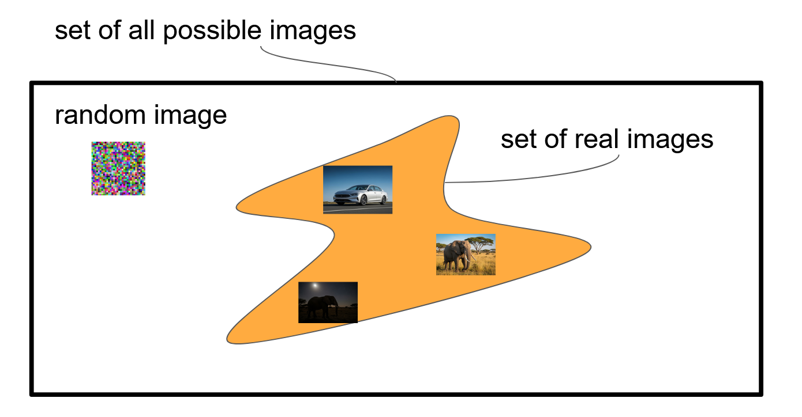
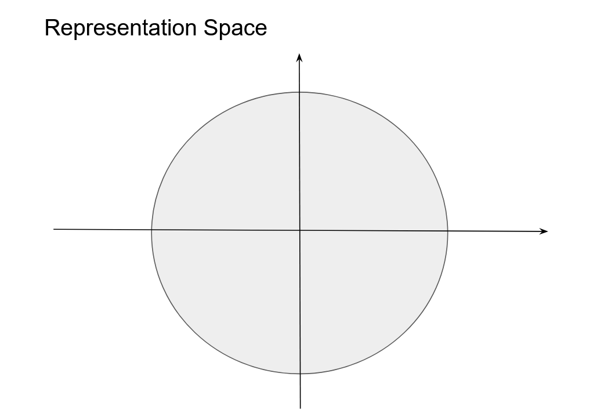
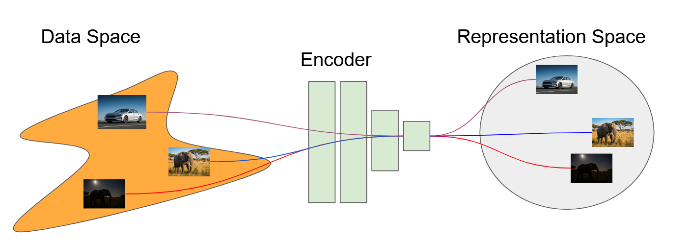
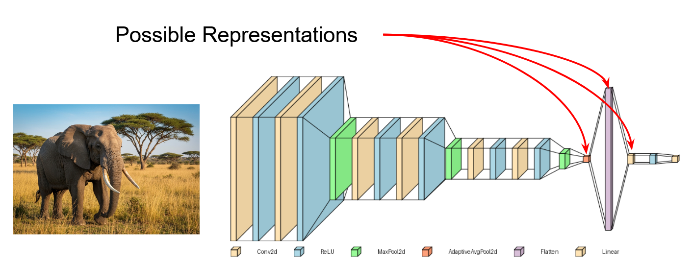
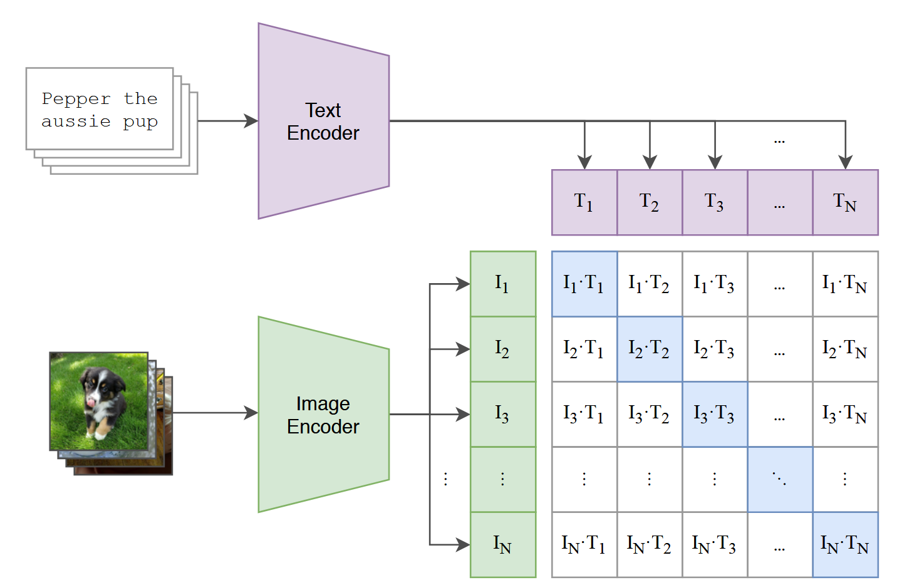
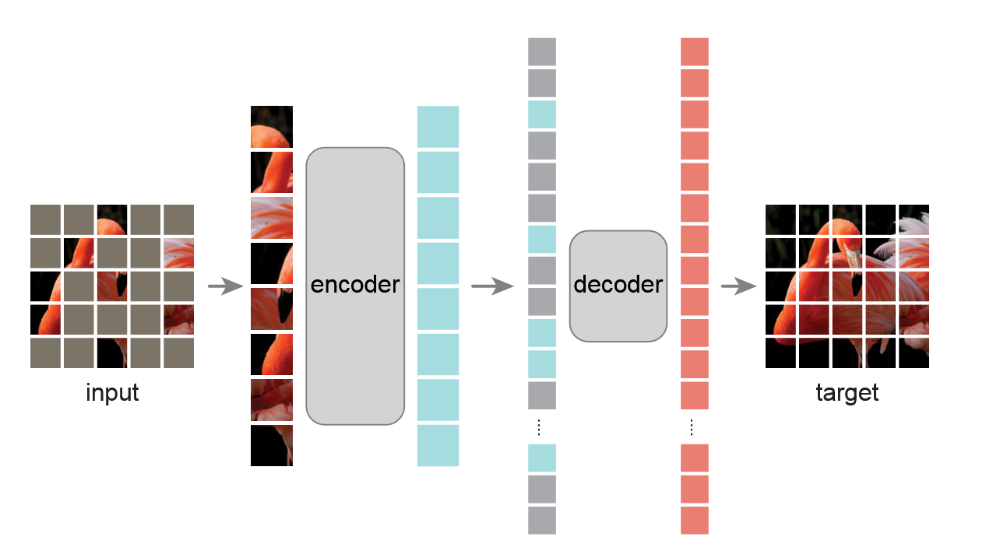
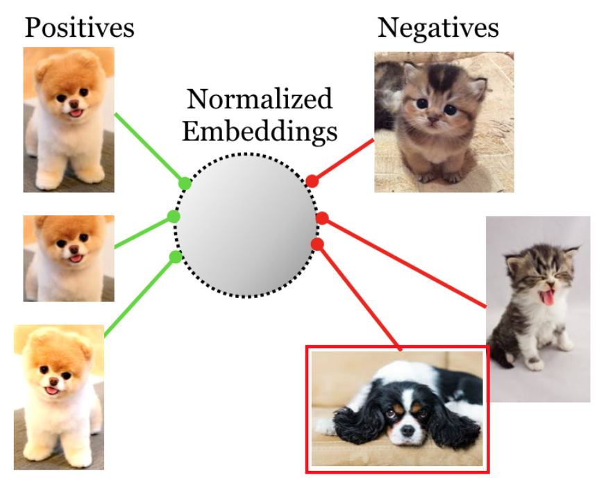
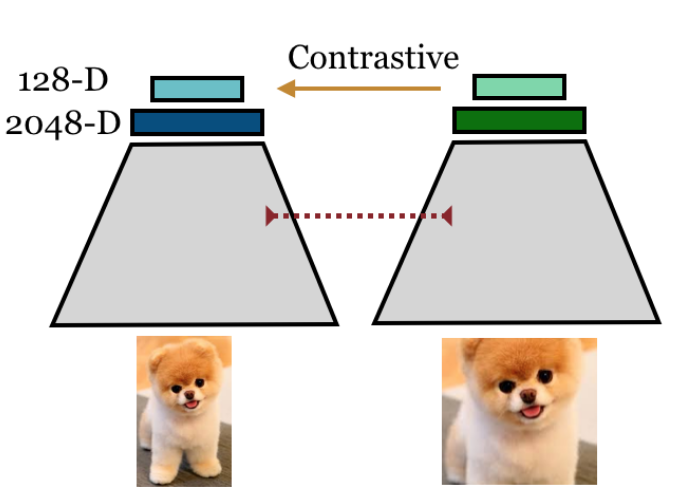
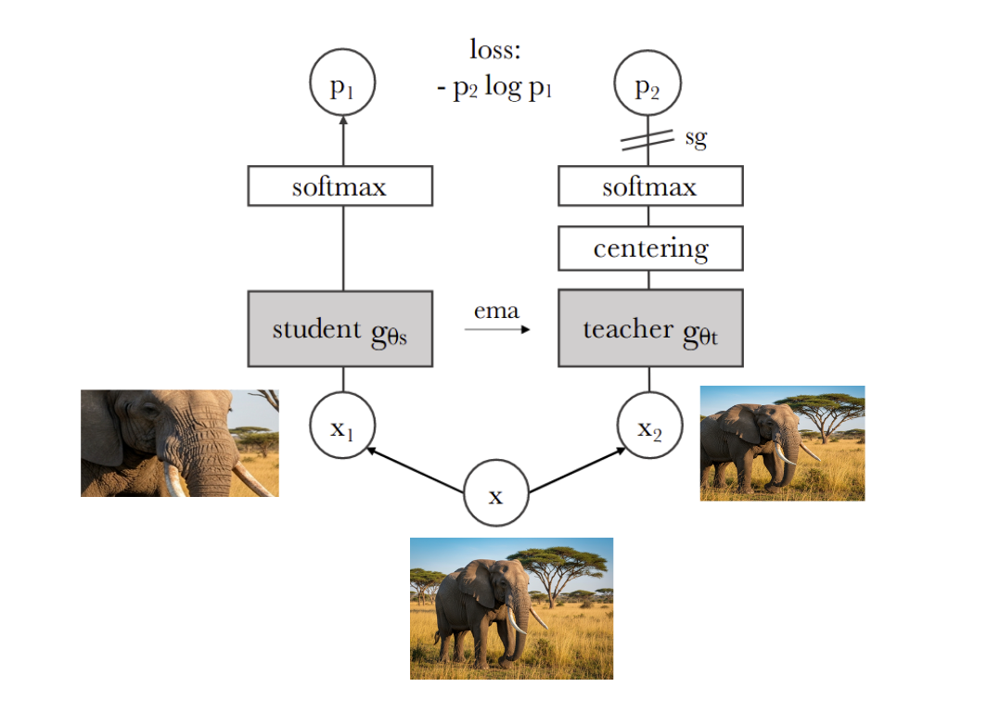
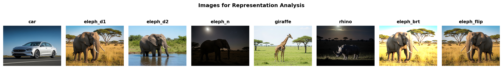

Representation Learning
CAS Deep Learning - Computer Vision (Part1)
Institute for Data Science I4DS, FHNW
Overview
- Motivation & Introduction
- What is Representation Learning?
- Deep Image Representations
- Comparing Representations
- Practical Applications
- Summary
Motivation
The Challenge
Example Image Source
Human description: “An elephant facing the camera with large tusks, standing in a savannah, bright daylight, cloudy sky”
Key insight: Massive compression while preserving semantically relevant information!
Information Content Comparison
Raw RGB Image: \(640 \times 360 \times 3 \times 8 = 5{,}529{,}600\) bits ≈ 675 KB
Natural Language: ~1,400 bits ≈ 0.17 KB
Compression Factor: ~3,950×!
But: Much relevant information preserved for practical tasks
The Image Space Problem
Illustrated are the set of all possible images and the subset of natural images
Total possible \(256\times256\) RGB images: \(255^{256 \times 256 \times 3}\) ≈ infinite
Natural images: tiny subset of this space
Implication: Pixel space is extremely inefficient for representing real images!
What is Representation Learning?
Definition
A representation is the output \(\mathbf{z} = f(\mathbf{x})\) produced by an encoder \(f\) applied to input \(\mathbf{x}\)
- \(\mathbf{z}\) retains task-relevant structure
- Discards nuisance variation
- Encoder \(f\) is the mapping, \(\mathbf{z}\) is the result
We focus on vector-valued (distributed) representations, not symbolic descriptions
Intuition: Synthetic Examples
Exercise: 2D Representation
Empty 2-dimensional representation space for mapping image similarity
Your task: How would you map these images to 2D space?
Hint: Similar images should be close, dissimilar far apart
Data Space → Representation Space
Data Space vs Representation Space: The encoder \(f\) transforms high-dimensional input samples \(\mathbf{x}_i\) into compact representations \(\mathbf{z}_i\) where semantic relationships become explicit
What Makes Good Representations?
1. Invariance & Selectivity Balance
- Invariant to nuisance transforms (lighting, pose)
- Selective for semantic differences
2. Geometric Structure Preservation
- Similar concepts cluster together
- Smooth manifold structure
3. Transfer Efficiency
- Few examples needed for new tasks
- Broad applicability across domains
4. Computational Practicality
- Compact dimensionality: \(\dim(\mathbf{z}) \ll \dim(\mathbf{x})\)
- Fast forward pass
The Invariance-Selectivity Trade-off
Invariance: \(\|f(\mathbf{x}) - f(g(\mathbf{x}))\|_2 < \epsilon\)
(Similar output for nuisance transforms)
Selectivity: \(\|f(\mathbf{x}_i) - f(\mathbf{x}_j)\|_2 > \delta\)
(Different outputs for semantic differences)
Challenge: Too much invariance → loss of discriminative details!
Sweet spot: Preserve task-relevant variations, discard nuisance factors
Deep Image Representations
Three Learning Paradigms
- Supervised Learning: Learn from human labels (ImageNet)
- Weakly Supervised: Learn from noisy/partial labels (image-text pairs)
- Self-Supervised: Learn from data structure (no labels needed)
Supervised Learning
Supervised Pre-training: Encoder + classifier trained with labeled data
- Train on labeled data (e.g., ImageNet 1000 classes)
- Cross-entropy loss on human-provided labels
- Penultimate layer embeddings = transferable features
Weakly Supervised: CLIP
CLIP Contrastive Pre-training: Dual encoders align images with text captions
Uses image-text pairs (web-scale data)
Contrastive loss: maximize diagonal, minimize off-diagonal
CLIP: Key Properties
Zero-shot Classification
Text prompt: “a photo of a {class}” → class prototype
Scalability
Learns from billions of noisy web pairs
Vision-Language Alignment
Shared embedding space for images and text
Self-Supervised Learning
Create pretext tasks from raw data (no human labels!)
Two dominant families:
- Imputation/Masked Modeling (MAE)
- Contrastive/Self-Distillation (SimCLR, DINO)
Masked Autoencoding (MAE)
MAE Pipeline: Mask patches → Encode visible → Decode all → Reconstruct masked
MAE: How It Works
- Mask 75% of image patches randomly
- Encode only visible patches (efficient!)
- Decode with mask tokens inserted
- Reconstruct original pixels at masked positions
Key insight: To fill in gaps, model must learn global structure
Contrastive Learning: SimCLR


Self-Distillation: DINO
DINO: Key Advantages
- No explicit negatives needed (unlike SimCLR)
- Works with smaller batches
- Emergent semantic clustering
- Produces high-quality local features (patch tokens)
Result: State-of-the-art transfer performance with simpler training
DINOv3: Local Features

DINOv3 Patch Features: Spatially-resolved embeddings preserve structure
Each patch = semantic feature vector (unlike global pooling)
Comparing Representations
Test Images Overview
Comparisons
Pixel Space Similarity
Problem: Lighting variations dominate, semantic relationships hidden!
ResNet (Supervised) Similarity
Better semantic grouping, but still affected by brightness
CLIP Similarity
Strong vision-language alignment, robust to appearance changes
DINOv2 Similarity
Best semantic discrimination, excellent invariance to nuisance factors
Comparison Summary
| Model | Semantic | Invariance | Use Case |
|---|---|---|---|
| Pixel | ❌ Poor | ❌ None | Baseline |
| ResNet | ⚠️ Moderate | ⚠️ Limited | Fast inference |
| CLIP | ✅ Good | ✅ Strong | Zero-shot, V+L |
| DINOv2 | ✅ Excellent | ✅ Excellent | Few-shot, dense tasks |
Practical Applications
Best Practices
- ✅ Start with k-NN baseline (diagnostic value)
- ✅ Use linear probe before fine-tuning
- ✅ Match invariances to task requirements
- ✅ Choose global/local features based on task
- ✅ Full fine-tuning is often overkill
Model Selection Guide
DINOv3: Best for discriminative vision tasks, few-shot learning
CLIP: Zero-shot classification, vision-language tasks
Supervised CNNs: When computational efficiency is critical
Global vs Local Representations
Global Embeddings (e.g., [CLS] token)
- Single vector per image
- Use for: Classification, retrieval, zero-shot
Local Embeddings (patch tokens)
- Grid of spatially-resolved features
- Use for: Segmentation, detection, dense prediction
Modern models provide both!
The Adaptation Hierarchy
Always start simple, add complexity only when needed!
- k-NN baseline (0 training) → Quick reality check
- Linear probe (freeze encoder) → Test feature quality
- LoRA/Adapters (efficient tuning) → Parameter-efficient
- Partial fine-tune (top layers) → Balanced approach
- Full fine-tune (all weights) → Last resort
Strategy 1: k-NN Baseline
No training required!
✅ Instant results, reveals representation quality
Strategy 2: Linear Probe
Freeze encoder, train only classification head
✅ Fast, stable, minimal overfitting risk
Strategy 3: LoRA/Adapters
Add small adapter modules, train only those
✅ Much cheaper than full fine-tuning, adapts to task
Strategy 4: Partial Fine-tune
Unfreeze top layers, keep early layers frozen
✅ Adjusts high-level features while keeping general features
Strategy 5: Full Fine-tune
Train all model weights - use as last resort!
⚠️ Risk: Overfitting with limited data, expensive compute
Summary
Key Takeaways
- Representation learning transforms raw pixels into semantic embeddings
- Three paradigms: Supervised, weakly supervised, self-supervised
- Trade-off: Balance invariance (robustness) with selectivity (discrimination)
- Model selection: DINOv3 for vision, CLIP for V+L, MAE for reconstruction
- Start simple: k-NN → Linear → Adapters → Fine-tune
Best Practices
- ✅ Start with k-NN baseline (diagnostic value)
- ✅ Use linear probe before fine-tuning
- ✅ Match invariances to task requirements
- ✅ Choose global/local features based on task
- ✅ Full fine-tuning is often overkill